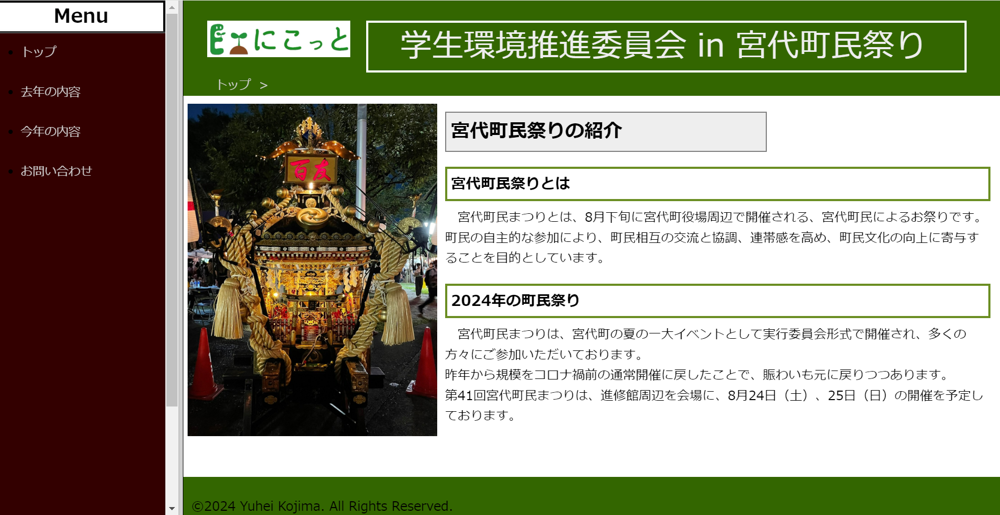
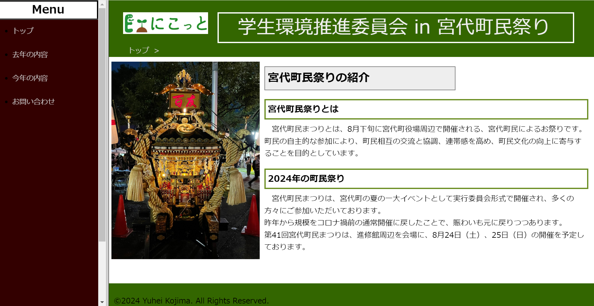

webサイト

Webサイトでの活動
WEBサイト作成では、所属している委員会の活動を紹介し、講義受講者250人の中から優秀者として選出されました。 サイト作成時には閲覧者にとっての見やすさを意識し、ページの移動が左メニューで簡潔に出来るようにしました。
委員会活動HP
WEBサイト作成では、所属している委員会の活動を紹介し、講義受講者250人の中から優秀者として選出されました。 サイト作成時には閲覧者にとっての見やすさを意識し、ページの移動が左メニューで簡潔に出来るようにしました。
委員会活動HP